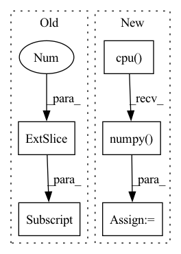

Pattern ID :16553
Before Change
y, feature = net(x)
// make score and link map
score_text = y[0,:,:,0] .cpu().data.numpy()
score_link = y[0,:,:,1].cpu().data.numpy()
// Post-processingAfter Change
for out in y:
// make score and link map
score_text = out[:, :, 0].cpu().data.numpy()
score_link = out[:, :, 1].cpu().data.numpy()
// Post-processing
boxes, polys, mapper = getDetBoxes(
score_text, score_link, text_threshold, link_threshold, low_text, poly, estimate_num_chars)In pattern: SUPERPATTERN
Frequency: 4
Non-data size: 5
Instances Fragment ID: 55725152
Project Name: jaidedai/easyocr
Commit Name: 78be56f87d091dfcea6d2289948fc86cc7188cf7
Time: 2021-06-12
Author: samhunsadamant@gmail.com
File Name: easyocr/detection.py
M Class Name: AnonimousClass
N Class Name: AnonimousClass
M Method Name: test_net(10)
N Method Name: test_net(10)
M Parent Class:
N Parent Class:
M File Name: easyocr/detection.py
N File Name: easyocr/detection.py
M Start Line: 26
M End Line: 58
N Start Line: 25
N End Line: 71
Before Change
if gts.shape[0] == 0: continue
// extract ignore mask
ignore = gts[:, -1]
gt_boxes = gts[:, :4]
// count keeped gts
total_faces += (ignore == 0).sum()After Change
gt_boxes = [gt_boxes.cpu().float().numpy() for gt_boxes in self.gt_boxes]
ignore_flags = [ignore_flag.cpu().numpy() for ignore_flag in self.ignore_flags]
total_faces = 0
Fragment ID: 55725150
Project Name: borhanmorphy/fastface
Commit Name: c5da7ce5325ff194e2b96a81245e3834e7bd2c29
Time: 2021-05-09
Author: borhano.f.42@gmail.com
File Name: fastface/metric/widerface_ap.py
M Class Name: WiderFaceAP
N Class Name: WiderFaceAP
M Method Name: compute(1)
N Method Name: compute(1)
M Parent Class: Metric
N Parent Class: Metric
M File Name: fastface/metric/widerface_ap.py
N File Name: fastface/metric/widerface_ap.py
M Start Line: 49
M End Line: 70
N Start Line: 55
N End Line: 74
Before Change
if results[0] is None:
return
top_label = np.array(results[0][:, 6] , dtype = "int32")
top_conf = results[0][:, 4] * results[0][:, 5]
top_boxes = results[0][:, :4]
After Change
if results[0] is None:
return
_results = results[0].cpu().numpy()
top_label = np.array(_results[:, 5], dtype = "int32")
top_conf = _results[:, 4]
top_boxes = _results[:, :4]
top_100 = np.argsort(top_conf)[::-1][:self.max_boxes] Fragment ID: 55725151
Project Name: bubbliiiing/detr-pytorch
Commit Name: 4e4f177fa730d8251a7c029d887c3885392cd4c2
Time: 2022-11-26
Author: 3323290568@qq.com
File Name: utils/callbacks.py
M Class Name: EvalCallback
N Class Name: EvalCallback
M Method Name: get_map_txt(5)
N Method Name: get_map_txt(5)
M Parent Class:
N Parent Class:
M File Name: utils/callbacks.py
N File Name: utils/callbacks.py
M Start Line: 112
M End Line: 148
N Start Line: 112
N End Line: 146